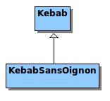
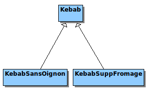
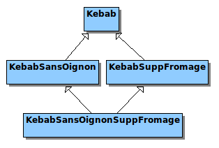
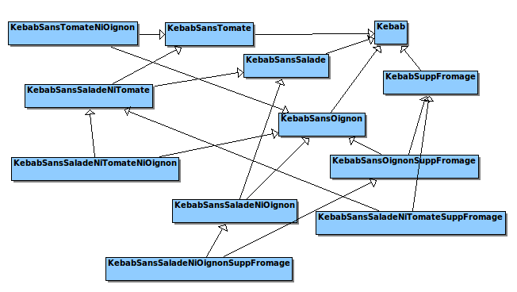
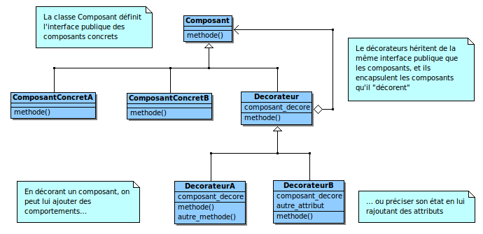
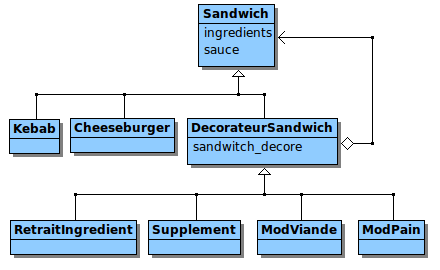

« La Programmation Orientée Objet, c'est bien joli, mais ça me fait passer deux fois plus de temps à réfléchir qu'à coder ! »
C'est fou le nombre de gens qui pensent cela… Et pourtant, s'ils savaient comme ils ont tort ! En effet, pour faire de la « belle » POO, il ne faut pas réfléchir deux fois plus que ce que l'on code… Ce devrait plutôt être cinq fois plus !
Cela peut sembler paradoxal, voire rébarbatif, mais c'est pourtant le reflet d'une réalité solide. La POO, ce n'est pas simplement la création d'une collection de classes liées entre elles par l'héritage ou l'encapsulation. Ces notions, dont la compréhension est extrêmement importante, ne sont que la « matière première » de la POO, un peu comme l'argile du potier. La véritable programmation objet, c'est l'art qui consiste à utiliser ces notions pour créer des programmes de qualité, facilement maintenables, dont les composants sont extensibles et réutilisables à souhait.
Ainsi, de la même manière que pour la pratique d'un art, pratiquer la POO demande d'acquérir un savoir-faire, ce qui nécessite de passer beaucoup de temps à réfléchir, analyser, s'entraîner, et accumuler de l'expérience.
Heureusement pour nous, l'expérience, ça peut se transmettre pour accélérer le processus. C'est d'ailleurs, comme nous allons le voir, ce qui a motivé la naissance des design patterns.
Dans ce tutoriel, nous allons étudier le design pattern Decorator, et son utilisation dans le langage Python. Cela va nous permettre de réfléchir sur plusieurs pratiques, bonnes et mauvaises, et de découvrir des pistes de réflexion que vous pourrez suivre afin de progresser dans votre pratique de la POO.
Pour suivre ce tutoriel, vous aurez besoin :
de connaître le langage Python,
d'avoir appris la POO en Python, et, de préférence, de l'avoir pratiquée,
d'avoir le goût du travail bien fait. :p
Les codes d'exemple de ce tutoriel ont été réalisés avec Python 3.
Je suis sûr que si j'effectuais un sondage ouvert auprès de plein de personnes différentes (développeurs, utilisateurs, éditeurs…), j'obtiendrais des tonnes de réponses uniques à cette question. Néanmoins, l'expérience prouve qu'il est possible de tracer, dans les grandes lignes, plusieurs caractéristiques générales qui différencient un programme quelconque d'un bon programme, et je vais me permettre de les résumer grossièrement. Un programme de qualité, c'est avant tout un programme :
1. qui fait exactement ce que l'utilisateur attend de lui ; 2. dont le code est facile à comprendre et à maintenir ; 3. dont le code est facile à faire évoluer et à réutiliser.
Dans ce tutoriel, étant donné que nous allons parler de programmation et de conception orientée objet, nous allons surtout nous pencher sur les deux derniers aspects.
Pourquoi est-ce si difficile de concevoir un programme de qualité ?
S'il devait n'exister qu'une seule vérité constante sur le développement d'applications, avec laquelle tout programmeur est amené un jour ou l'autre à se battre, ce serait certainement le changement. En effet, quel que soit le temps que vous passerez à réfléchir avec application sur le design d'un programme, celui-ci sera toujours, un jour ou l'autre, amené à être modifié, pour satisfaire les nouveaux besoins d'un client, pour ajouter la fonctionnalité à laquelle vous venez de penser vous-même, ou, plus généralement, pour que votre projet puisse continuer à vivre.
C'est le fait de savoir gérer, voire anticiper ce changement, qui est difficile. Heureusement, des générations de développeurs et de concepteurs avant nous se sont déjà penchés sur la question, et nous disposons aujourd'hui, en tant que développeurs, de méthodes et d'outils pour nous y aider. Parmi eux se trouvent les grands principes de la POO, et les design patterns.
Les design patterns, c'est quoi ?
Lorsque l'on doit concevoir une application permettant de répondre à une problématique donnée, il n'est pas rare que l'on puisse reconnaître des structures semblables à ce que l'on a déjà fait par le passé.
D'ailleurs, cela a certainement déjà dû vous arriver. Ne vous êtes-vous jamais surpris à penser quelque chose comme : « tiens, si j'organise mes objets de cette manière, je vais avoir le même soucis que quand j'ai développé tel projet le mois dernier », et adapter votre architecture en sachant que de cette façon, vous évitez de reproduire un problème que vous avez déjà résolu dans un autre contexte ?
Ces structures redondantes, vous vous doutez bien que vous n'êtes pas le premier à les découvrir… De nombreux développeurs avant nous les ont déjà rencontrées. Certains d'entre eux les ont même étudiées et, mieux encore, ils les ont partagées afin de permettre aux autres développeurs de gagner du temps le jour où ils rencontreront eux-mêmes un problème de conception similaire. On appelle ces structures des design patterns (en français, des patrons de conception).
Historiquement, l'étude des « design patterns » est née dans les années 1990, et a été popularisée en 1994, avec le livre remarquable du « Gang of Four » (le « gang des quatre ») intitulé Design Patterns: Elements of Reusable Object-Oriented Software. Cet ouvrage recense de nombreux patterns reconnus et éprouvés par les développeurs, et en explique le fonctionnement, les intérêts, les domaines d'applications, et les limites : en un mot comme en cent, c'est la bible des patrons de conception.
Pour résumer l'idée, un patron de conception :
est une solution générique pour un problème de conception particulier ;
porte un nom, ce qui permet aux développeurs qui sont à l'aise avec les design patterns de communiquer leurs idées de manière plus efficace ;
est un outil servant à rendre un programme plus facile à maintenir et à faire évoluer ;
est le fruit de l'expérience de programmeurs qui ont été amenés à régler un même problème dans des contextes différents, et non une solution théorique.
Dans ce tutoriel, nous allons étudier un patron de conception particulier, le « Decorator » (en français, Décorateur). J'utiliserai de préférence son nom anglophone, car, comme je viens de le dire, le nom d'un patron de conception permet aux développeurs de savoir qu'ils parlent bien de la même chose : les communautés de développeurs s'exprimant le plus souvent en anglais, il est préférable de retenir les patterns sous leur nom originel, plutôt que leur traduction.
Le pattern Decorator
Le Decorator est l'un des patrons de conception les plus simples à comprendre et à mettre en œuvre, mais aussi l'un des plus formateurs.
Non content de résoudre un problème de conception fréquent (que nous allons voir dans un instant), il a aussi le mérite d'attirer l'attention des débutants sur le piège qui consiste à penser que l'héritage est la « réponse par défaut » à tous les problèmes en POO. Qui plus est, pour nous, pythonistes, il a une résonance particulière, étant donné que Python propose une syntaxe pour utiliser des décorateurs statiques de manière élégante. Bien que différent du patron de conception du même nom, ce système repose sur un principe assez proche.
Les buts de ce tutoriel sont donc multiples :
découvrir un design pattern (peut-être votre premier…), qui vous sera probablement utile à l'avenir, et vous montrer la puissance de ce genre de solution ;
initier une réflexion un peu plus approfondie sur les rôles de l'héritage et de l'encapsulation en POO ;
(re-)découvrir ensemble plusieurs grands principes de la POO ;
avoir une vision plus globale du principe de décoration, qui est implémenté dans votre langage de programmation préféré.
Dans la prochaine partie, nous allons définir un cas « plus ou moins concret », où le Décorateur prend toute sa valeur, et qui nous servira d'exemple tout le long de ce tutoriel.
Vous êtes chargé de développer une application pour le compte du gérant d'un petit restaurant qui vend des kebabs et autres sandwiches dits "de spécialité turque". Celui-ci souhaite faire décoller son business en créant une franchise, sous laquelle il pourra ouvrir plusieurs autres restaurants identiques, placés à des lieux stratégiques dans Paris, voire, à terme, dans toute la France.
L'image de marque que le gérant veut donner à sa clientèle est celle d'un établissement « à la carte », où tous les sandwiches vendus sont personnalisables (avec leurs prix modifiés en conséquence) : par exemple, si un client commande un kebab "sans oignon", il bénéficiera d'une légère réduction sur le prix de son sandwich, pour lui donner le sentiment qu'il ne paye « que ce qu'il mange ». Il en va de même pour les suppléments que le client décide d'ajouter à son sandwich : le supplément se répercute par une légère augmentation du prix.
Par ailleurs, il n'est pas impossible qu'un site internet soit créé, de manière à mettre en place, dans les prochaines années, un service de livraison à domicile, ou que des bornes de commande rapide par carte bleue soient installées dans les restaurants afin de gérer de manière plus fluide l'affluence de clients pendant les heures de pointe.
Votre mission, si vous l'acceptez, est de créer un logiciel de gestion des commandes pour ce restaurateur. Le programme sera chargé de gérer la prise de commandes et communiquer avec une interface pour que les vendeurs puissent, en quelques touches sur un écran tactile, sélectionner un sandwich et le personnaliser selon la demande du client, afin que le prix soit calculé automatiquement.
Évidemment, le cœur de ce programme aura aussi des chances d'être repris à l'avenir par un service web pour prendre les commandes de livraison à domicile ou par l'interface des bornes de commande rapide : il faut donc que son architecture soit suffisamment souple pour qu'elle puisse être adaptée simplement le jour où cela deviendra nécessaire.
Portée de notre étude
Bien évidemment, nous n'allons pas créer un service web ou une interface pour écran tactile dans ce tutoriel : tout ce qui nous intéresse aujourd'hui, c'est le cœur du programme, la logique qui tourne derrière l'interface. Plus précisément, l'aspect qui nous intéresse dans ce tutoriel, c'est comment nous allons modéliser nos kebabs afin que l'on puisse les personnaliser facilement pour le client.
Cette personnalisation, ici, se traduit par l'ajout ou le retrait de certains ingrédients dans le sandwich. Pour l'instant, nous allons nous concentrer sur un seul type de sandwich, le kebab. On pourra donc, par exemple, avoir des kebabs :
sans oignon,
sans salade,
sans tomate,
avec de la viande de poulet au lieu du mouton,
avec supplément fromage,
avec supplément oignon,
avec supplément salade,
avec supplément tomate,
avec supplément viande,
...
ainsi que toutes les combinaisons imaginables entre ces diverses possibilités. Le but recherché, c'est une manière de créer simplement ces sandwiches, et d'afficher dans la console leur prix ainsi que leur composition (comme sur un ticket de caisse, en fait).
Comme nous allons le voir dans la prochaine partie, tout se joue à la conception.
Avant d'aller plus loin…
Faites-moi plaisir : prenez le temps de réfléchir à la façon dont vous vous y prendriez, sans plus d'information que ce que je viens de vous donner, pour modéliser des kebabs personnalisables. Si vous réfléchissez de manière autonome avant de lire la suite, vous découvrirez seul les problèmes qui se posent à la conception (ou au moins une partie d'entre eux), et vous retiendrez à coup sûr plus d'informations utiles de ce tutoriel. ;)
Dans cette partie, nous allons chercher ensemble le meilleur moyen de modéliser ce problème. Pour ce faire, nous allons procéder par itérations, c'est-à-dire que l'on va commencer par une modélisation naïve que nous allons corriger chaque fois que l'on constatera un problème.
Un kebab simple
Commençons déjà par créer notre classe Kebab. Un kebab simple est composé de salade, de tomates, d'oignons, de viande de mouton et de sauce, et il est accompagné de frites. Il a un prix et peut afficher sa composition. Voici une première implémentation possible :
Notre classe Kebab ne contient que quatre méthodes. Dans le constructeur (__init__), on initialise les prix des ingrédients. Ceci se fait à partir de valeurs déclarées dans des constantes globales. Dans le cas réel, il y aurait peut-être besoin de récupérer ces valeurs sur une base de données, mais cela dépasse la portée de ce tutoriel.
La méthode prix définit une propriété du même nom : si vous n'êtes pas à l'aise avec cette notation, vous pourrez en apprendre plus sur cette page de la documentation de Python. Clairement, elle calcule le prix du kebab en fonction de celui de ses ingrédients.
Enfin les méthodes __repr__ et __str__ permettent d'afficher l'objet sous forme de chaîne de caractères. C'est grâce à ces méthodes que nous allons contrôler le bon fonctionnement de notre programme.
Voici un exemple d'utilisation :
>>> a = Kebab('ketchup')
>>> print(a)
Kebab
>>> a
Kebab (5.0) : salade (0.2) oignons (0.3) frites (0.5) tomates (0.2) base (3.8) sauce (ketchup)
Utilisons l'héritage !
Une première idée que l'on peut explorer, pour modéliser la personnalisation de nos sandwiches, est d'utiliser simplement l'héritage. En effet, on peut partir du constat qu'un « kebab sans oignon » EST UN kebab. La relation EST UN étant traduite le plus souvent en POO par l'héritage, il suffit de dire que la classe KebabSansOignon dérive de la classe Kebab.
Bien ! Partons sur cette idée.
class KebabSansOignon(Kebab):
def __init__(self, sauce):
super().__init__(sauce)
self.oignons = 0 # Pas d'oignon
def __str__(self):
return 'Kebab sans oignon'
Comme vous pouvez le constater, il nous a suffi de décréter que le prix des oignons dans ce kebab tombait à 0. Voici un exemple :
>>> a = KebabSansOignon('ketchup')
>>> print(a)
Kebab sans oignon
>>> a
Kebab (4.7) : salade (0.2) oignons (0) frites (0.5) tomates (0.2) base (3.8) sauce (ketchup)
On remarquera que le prix du kebab a diminué de 30 centimes, c'est bien le comportement que l'on attendait.
Pour l'instant, l'architecture très simple de notre application ressemble à ceci :

Bien ! Puisque cette méthode fonctionne jusqu'ici, implémentons une seconde modification : le supplément fromage.
>>> a = KebabSuppFromage("ketchup")
>>> print(a)
Kebab suppl. fromage
>>> a
Kebab (5.5) : salade (0.2) oignons (0.3) frites (0.5) fromage (0.5) tomates (0.2) base (3.8) sauce (ketchup)
Et notre architecture donne maintenant :

Que va t'il se passer lorsque nous voudrons définir un « kebab sans oignon avec supplément fromage » ?
À quoi ressemblera notre architecture lorsque l'on aura défini toutes les modifications possibles ?
Bien, répondons à ces questions dans l'ordre (mais j'espère que vous y avez réfléchi). D'abord, si l'on veut définir un « kebab sans oignon avec supplément fromage », on est obligé, si l'on veut suivre notre logique, de dire que c'EST UN « kebab sans oignon » ET UN « kebab avec supplément fromage », ce qui nous donne le schéma suivant :

Si vous ne le savez pas encore, ceci est une architecture en diamant, et c'est le cas par excellence que l'on cherche à éviter lorsque l'on touche à l'héritage multiple, car cela introduit de très gros risques de bugs et de comportements indéterminés. Dans le cas présent, cela peut encore se gérer, étant donné que nos objets sont très simples, mais le problème reste que notre conception de base nous force à utiliser l'héritage multiple, que chacun d'entre vous devrait considérer comme dangereux.
D'une manière générale, je vous rappelle la règle d'or :
Au cas où vous ne seriez pas encore convaincu que nous avons là un gros problème de conception, essayons de répondre à la seconde question, et envisageons l'intégration des autres personnalisations possibles pour nos kebabs. Personnellement, j'ai eu la flemme de dessiner tout le schéma, mais voici ce que cela donne après quelques ajouts seulement :

Le schéma parle de lui-même, n'est-ce pas ?
On se retrouve avec un nombre de classes qui croît de manière exponentielle chaque fois que l'on veut introduire une nouvelle personnalisation. Il est évident que ce genre de programme finit très vite par être extrêmement complexe, non maintenable et impossible à faire évoluer.
Que retenir de notre échec ?
Cet exemple montre que, si l'héritage est le moyen « classique » de modifier légèrement le comportement d'une classe, ce n'est pas pour autant la réponse par défaut à tous nos problèmes. Il y a des cas où la modification du comportement des classes est, en soi, une caractéristique du programme, un comportement naturel, attendu, et surtout, fréquent. Dans ces cas typiques, où un objet peut voir son comportement subir de nombreuses petites modifications, utiliser l'héritage peut amener à définir de bien trop nombreuses classes, et n'est pas la démarche appropriée.
Bon, il est maintenant clairement établi que l'on ne peut pas utiliser l'héritage (du moins, pas de cette façon) pour répondre à notre problème. Essayons autre chose.
Un kebab intelligent
Le problème de la solution précédente est qu'elle multiplie le nombre de classes avec chaque modification. Une réflexion légitime serait de se dire « Eh bien ! S'il faut éviter de multiplier les classes, on n'a qu'à gérer les personnalisations directement dans la classe Kebab. ».
Cela semble une bonne idée. Essayons.
Il semble clair que nous ne pouvons pas définir tous les ingrédients et leurs quantités comme des membres de notre classe Kebab (ils seraient un peu trop nombreux), voici une proposition d'implémentation permettant de gérer simplement les ingrédients :
from collections import namedtuple
PRIX_BASE = 3.0
PRIX_MOUTON = 0.8
PRIX_POULET = 1.0
PRIX_SALADE = 0.2
PRIX_TOMATES = 0.2
PRIX_OIGNONS = 0.3
PRIX_FRITES = 0.5
PRIX_FROMAGE = 0.5
Ingredient = namedtuple('Ingredient', 'prix quantite')
class Kebab:
def __init__(self, sauce):
self.type_sauce = sauce
self.type_viande = 'mouton'
self.base = PRIX_BASE
self._ing = dict()
self._ing['viande'] = Ingredient(PRIX_MOUTON, 1)
self._ing['salade'] = Ingredient(PRIX_SALADE, 1)
self._ing['tomates'] = Ingredient(PRIX_TOMATES, 1)
self._ing['oignons'] = Ingredient(PRIX_OIGNONS, 1)
self._ing['frites'] = Ingredient(PRIX_FRITES, 1)
self._ing['fromage'] = Ingredient(PRIX_FROMAGE, 0)
@property
def prix(self):
return self.base + sum(i.prix*i.quantite for i in self._ing.values())
def __str__(self):
s = "Kebab ({0:.2f}) sauce {1}".format(self.prix, self.type_sauce)
if self.type_viande != "mouton":
s += ", au {0}".format(self.type_viande)
for elt in self._ing:
qte = self._ing[elt].quantite
if qte > 0:
s += ", {0}x {1}".format(qte, elt)
else:
s += ", sans {0}".format(elt)
return s
def sans(self, ingredient):
if ingredient in self._ing:
prix, _ = self._ing[ingredient]
self._ing[ingredient] = Ingredient(prix, 0)
def supp(self, ingredient):
if ingredient in self._ing:
prix, qte = self._ing[ingredient]
self._ing[ingredient] = Ingredient(prix, qte+1)
def poulet(self):
self.type_viande = 'poulet'
_, qte = self._ing['viande']
self._ing['viande'] = Ingredient(PRIX_POULET, qte)
Pour résumer l'idée : la classe Kebab encapsule un dictionnaire, qui à chaque nom d'ingrédient associe une quantité ainsi qu'un prix de base. Elle définit 3 méthodes supplémentaires : sans pour ôter un ingrédient, supp pour ajouter un supplément, et, poulet (cette méthode devrait vous mettre la puce à l'oreille), pour changer le type de viande utilisé.
Comme vous le voyez, ça fonctionne plutôt bien : chaque modification se répercute sur le prix du kebab, et tout cela est mis en œuvre grâce à relativement peu de code. Qui plus est, nous n'avons eu qu'une seule classe à implémenter pour arriver à nos fins, ce qui rend notre architecture la plus simple possible.
Il est clair que cette conception est beaucoup plus efficace que la précédente. Cependant, elle souffre encore de plusieurs défauts qui la rendent difficile à faire évoluer. C'est ce que l'on va essayer d'identifier ensemble.
Quand le patron a une nouvelle idée…
Imaginons que le patron ait l'idée d'ajouter de nouvelles personnalisations possibles pour un kebab. Par exemple : l'utilisation de pain pita au lieu du pain normal, l'utilisation de viande de dinde au lieu du mouton ou du poulet, ou bien de nouveaux ingrédients en supplément, mettons les « épices du chef ». Que se passerait-il au niveau de notre classe Kebab ?
Voyons un peu.
Pour ajouter un nouveau type de viande dans les choix possibles, nous serions obligés de créer une nouvelle méthode dinde dans la classe Kebab.
Pour ajouter un nouvel ingrédient, nous serions obligés d'ajouter un champ "epices du chef" dans le dictionnaire _ing et d'initialiser sa quantité à 0.
Pour ajouter le choix du type de pain utilisé, nous serions obligés :
d'ajouter un membre type_pain,
d'ajouter un champ "pain" dans le dictionnaire _ing,
d'ajouter une méthode pain_pita.
En bref, notre classe Kebab doit tout savoir des personnalisations possibles : si on veut faire évoluer l'application, nous sommes obligés d'accumuler des modifications dans cette classe, ce qui risque, avec le temps, de la rendre très lourde et illisible. En bref, cela viole le grand principe « Open-Closed » (ou « principe d'ouverture-fermeture ») de la POO.
Pour ceux qui ne le connaîtraient pas encore, je vous rappelle l'énoncé (très zen) de ce principe :
Oooohhhhhhmmm…
Amen.
Cela se justifie très simplement : modifier une classe ou une méthode, c'est risquer d'introduire des bugs ou des effets de bord. Seulement une application étant constamment sujette au changement, il faut quand même que nos classes soient réutilisables, même lors d'une évolution de l'application. En bref : nos classes doivent être définies une bonne fois pour toutes, de telle manière qu'il est facile de les faire évoluer sans les modifier, même dans des cas qui n'étaient pas prévus à la base.
Ici, ce n'est pas le cas. Notre nouvelle implémentation, quoique bien meilleure que la précédente, est encore insuffisante : elle marche, mais ne peut pas évoluer facilement. Notre problème de conception est donc un peu plus ardu que prévu… Je pense qu'il est temps maintenant de faire appel à un design pattern.
Un beau dessin valant parfois mieux qu'un long discours, examinons ensemble le schéma du Decorator tel qu'il est défini dans le livre du « Gang of Four ».

Ce schéma paraît bien compliqué à première vue. Si vous avez du mal à comprendre le fonctionnement qu'il décrit, ne vous inquiétez pas, nous allons voir tout cela ensemble.
Dans ce schéma, nous avons une classe principale, le Composant abstrait, qui définit l'interface publique de plusieurs ComposantConcrets. Dans notre cas, le Composant se traduirait par une classe Sandwich, dont dérivent en particulier le Kebab, ainsi que d'autres sandwiches "de base", mettons le Cheeseburger, par exemple. En clair, le comportement de base des sandwiches est défini dans une classe de plus haut niveau que le Kebab, et chacune des implémentations concrètes précise le comportement du Sandwich. Jusqu'ici, c'est l'expression la plus pure de l'héritage.
Là où le Decorator se démarque, c'est au niveau de la classe Decorateur. Dans le schéma générique, on définit une interface Decorateur d'où vont dériver de multiples implémentations différentes. Ce qui caractérise ces objets, c'est que non seulement, ils héritent (directement ou non) de l'interface publique de Composant, mais qu'en plus, ils encapsulent un Composant (ou une classe concrète dérivée) afin d'en modifier le comportement ou l'état. Sachant qu'un Decorateur EST UN Composant, cela veut dire qu'un Decorateur peut envelopper indifféremment un ComposantConcret ou un autre Decorateur. Vous en comprenez l'intérêt ?
Dans notre cas, les implémentations concrètes de DecorateurSandwich pourront être Supplement (pour ajouter un ingrédient), ModPain (pour utiliser du pain pita au lieu du pain normal, par exemple), ModViande (pour remplacer le mouton par du poulet), ou RetraitIngredient (pour avoir un kebab « sans oignon »). Étant donné que les décorateurs peuvent s'envelopper les uns les autres, cela va nous permettre de créer toutes les combinaisons de modifications possibles et imaginables, avec très peu d'objets. ;)
Une remarque importante, c'est que les décorateurs ne sont pas vraiment obligés de tous hériter d'une classe Decorateur. En effet : dans le cas où nos objets sont simples (comme ici), on peut sans crainte créer des décorateurs qui héritent directement de Composant. Cependant, pour cette fois, nous allons respecter scrupuleusement le schéma. ;)
Application du Decorator à notre problème
Bien ! Les explications que je vous ai données au paragraphe précédent peuvent être résumées dans le schéma suivant :

Voyons comment ceci peut se traduire en code.
D'abord, la classe Sandwich de base :
from collections import namedtuple
Ingredient = namedtuple('Ingredient', 'prix qte')
class Sandwich:
def __init__(self, sauce):
self.sauce = sauce
self._ing = dict()
@property
def prix(self):
return sum(i.prix * i.qte for i in self._ing.values())
def __repr__(self):
return "Sandwich sauce {0}".format(self.sauce)
def __str__(self):
s = repr(self)
for key, it in self._ing.items():
s += "\n {1.qte:>2}x {0:<15}{2:>5.2f} €".format(key, it, it.prix * it.qte)
s += "\nTotal {:>5.2f} €".format(self.prix)
return s
Un sandwich est caractérisé par sa sauce, ainsi que la liste de ses ingrédients. La somme des prix × quantite des ingrédients constitue le prix du sandwich. Enfin, deux méthodes utilitaires sont créées, l'une pour décrire le sandwich, et l'autre pour donner le détail du prix.
Cette classe remplit le rôle minimal du décorateur
elle encapsule un Sandwich dont le comportement est destiné à être modifié.
elle se fait passer pour le Sandwich décoré, de telle manière que le code qui utilisera ce décorateur aura l'impression de traiter directement le Sandwich et n'y verra que du feu. :ninja:
C'est pour gérer le second aspect que l'on récupère une référence du membre _ing (le dictionnaire d'ingrédients) du sandwich décoré dans le membre _ing du décorateur : en modifiant les ingrédients du DecorateurSandwich on modifiera directement les ingrédients du Sandwich décoré. ;)
Essayons maintenant de modéliser un premier décorateur : le retrait d'ingrédients.
class RetraitIngredient(DecorateurSandwich):
def __init__(self, sandwich, ingredient):
super().__init__(sandwich)
# suppression de l'ingrédient voulu
self.retrait = None
if ingredient in self._ing:
del self._ing[ingredient]
self.retrait = ingredient
def __repr__(self):
r = repr(self.sandwich)
# Ajout de la mention "sans X" si un ingrédient
# a bien été retiré
if self.retrait is not None:
r += ", sans {0}".format(self.retrait)
return r
Comme vous le voyez, c'est extrêmement simple. Une fois que le constructeur de la classe mère DecorateurSandwich a été appelé, on n'a plus qu'à travailler sur les membres de notre classe exactement comme si l'on modifiait le sandwich décoré de l'intérieur.
Regardez le résultat.
>>> a = Kebab("harissa")
>>> print(a)
Kebab sauce harissa
1x tomates 0.20 €
1x salade 0.20 €
1x base 3.00 €
1x oignons 0.30 €
1x frites 0.50 €
Total 4.20 €
>>> a = RetraitIngredient(a, "oignons") # retrait d'un ingrédient
>>> print(a)
Kebab sauce harissa, sans oignons
1x tomates 0.20 €
1x salade 0.20 €
1x base 3.00 €
1x frites 0.50 €
Total 3.90 €
>>> a = RetraitIngredient(a, "champignons") # retrait d'un ingrédient inexistant
>>> print(a) # aucun effet
Kebab sauce harissa, sans oignons
1x tomates 0.20 €
1x salade 0.20 €
1x base 3.00 €
1x frites 0.50 €
Total 3.90 €
>>> a = RetraitIngredient(a, "frites") # retrait d'un nouvel ingrédient
>>> print(a)
Kebab sauce harissa, sans oignons, sans frites
1x tomates 0.20 €
1x salade 0.20 €
1x base 3.00 €
Total 3.40 €
Magique, non ? On peut d'ailleurs créer quelques fonctions utilitaires pour alléger la syntaxe :
Ce qui peut nous permettre de faire quelque chose comme :
>>> a = sans_frite(sans_oignon(sans_tomate(Kebab("ketchup"))))
>>> print(a)
Kebab sauce ketchup, sans tomates, sans oignons, sans frites
1x salade 0.20 €
1x base 3.00 €
Total 3.20 €
Vous devriez commencer à sentir la puissance des décorateurs, maintenant. ;)
Poursuivons et essayons d'implémenter le Supplement.
class Supplement(DecorateurSandwich):
def __init__(self, sandwich, ingredient, prix):
super().__init__(sandwich)
# ajout de l'ingrédient voulu
prix, qte = self._ing.get(ingredient, Ingredient(prix, 0))
self.ajout = ingredient
self._ing[ingredient] = Ingredient(prix, qte+1)
def __repr__(self):
r = repr(self.sandwich)
s = ", supplément {0}".format(self.ajout)
if s not in r:
r += s
return r
def supp_fromage(sandwich):
return Supplement(sandwich, 'fromage', PRIX_FROMAGE)
def supp_oignon(sandwich):
return Supplement(sandwich, 'oignons', PRIX_OIGNONS)
Aucune réelle difficulté, si ce n'est qu'il faut faire attention à ne pas se répéter dans le libellé lorsque l'on applique plusieurs suppléments identiques. Remarquez l'utilisation de la méthode get du dictionnaire _ing qui permet de récupérer une valeur par défaut si aucun élément du dictionnaire ne correspond à la clé donnée.
Comme vous le constatez, on applique un double supplément fromage et un simple supplément oignon à notre Kebab. Le libellé reste lisible, et toutes les modifications sont prises en compte dans le prix.
Il ne reste plus que deux décorateurs à créer : le modificateur de viande, et le modificateur de pain. Ces deux classes sont tellement semblables que l'on pourrait même les réunir en une seule classe. Cependant, utiliser deux classes séparées permet de s'assurer plus simplement que l'on n'effectue pas plusieurs fois une même modification (si le client décide de changer la viande pour "poulet", "oh puis non en fait dinde", il n'a pas à payer deux fois la modification).
class ModViande(DecorateurSandwich):
def __init__(self, sandwich, viande):
super().__init__(sandwich)
self.viande = viande
self.deja_fait = "mod viande" in self._ing
if not self.deja_fait:
self._ing["mod viande"] = Ingredient(PRIX_MOD_VIANDE, 1)
def __repr__(self):
s = " mod viande {0}".format(self.viande)
r = repr(self.sandwich).split(',')
if not self.deja_fait:
r.append(s)
else:
for idx, elt in enumerate(r):
if "mod viande" in elt:
r[idx] = s
break
return ','.join(r)
class ModPain(DecorateurSandwich):
def __init__(self, sandwich, pain):
super().__init__(sandwich)
self.pain = pain
self.deja_fait = "mod pain" in self._ing
if not self.deja_fait:
self._ing["mod pain"] = Ingredient(PRIX_MOD_PAIN, 1)
def __repr__(self):
s = " pain {0}".format(self.pain)
r = repr(self.sandwich).split(',')
if not self.deja_fait:
r.append(s)
else:
for idx, elt in enumerate(r):
if "pain" in elt:
r[idx] = s
break
return ','.join(r)
def mod_poulet(sandwich):
return ModViande(sandwich, 'poulet')
def mod_dinde(sandwich):
return ModViande(sandwich, 'dinde')
def mod_pita(sandwich):
return ModPain(sandwich, 'pita')
Et voilà le résultat :
>>> a = mod_dinde(mod_pita(Kebab("ketchup")))
>>> print(a)
Kebab sauce ketchup, pain pita, mod viande dinde
1x mod viande 0.20 €
1x salade 0.20 €
1x oignons 0.30 €
1x frites 0.50 €
1x tomates 0.20 €
1x base 3.00 €
1x mod pain 0.20 €
Total 4.60 €
>>> a = mod_poulet(a)
>>> print(a)
Kebab sauce ketchup, pain pita, mod viande poulet
1x mod viande 0.20 €
1x salade 0.20 €
1x oignons 0.30 €
1x frites 0.50 €
1x tomates 0.20 €
1x base 3.00 €
1x mod pain 0.20 €
Total 4.60 €
Comme vous pouvez le voir, le libellé du sandwich a bien mémorisé la deuxième modification pour la viande, mais le prix n'a heureusement pas été affecté. ;)
Voilà, nous avons terminé d'implémenter les personnalisations prévues par le cahier des charges initial. Testons un peu la bestiole et commandons un « kebab mayo/harissa, avec pain pita, au poulet, avec supplément fromage et sans oignon » :
>>> a = sans_oignon(supp_fromage(mod_poulet(mod_pita(Kebab("mayo/harissa")))))
>>> print(a)
Kebab sauce mayo/harissa, pain pita, mod viande poulet, supplément fromage, sans oignons
1x mod viande 0.20 €
1x salade 0.20 €
1x frites 0.50 €
1x fromage 0.50 €
1x tomates 0.20 €
1x base 3.00 €
1x mod pain 0.20 €
Total 4.80 €
Bon appétit ! :D
Prenons un peu de recul :
Toutes les modifications que nous avons prévues sont modélisées par une classe.
Nous n'avons pas eu besoin de créer trop de classes (une par type de modification).
Nos classes Sandwich et Kebab n'ont été définies qu'une fois et une seule, et nous n'avons pas eu besoin d'y retoucher.
La syntaxe des modifications est ridiculement simple à utiliser.
On est bien loin de notre explosion combinatoire du premier jet, et de la classe "qui-fait-tout, qui-sait tout" du second essai.
Avouez qu'il s'agit là d'une solution puissante et élégante ! Mais le meilleur reste à venir, vous n'avez encore rien vu… :p
Quand le patron a (encore) une nouvelle idée…
Pour bien mesurer la puissance réelle du Decorator, faites-moi le plaisir de réfléchir aux questions suivantes. Vous devriez vous émerveiller devant la simplicité des réponses. ;)
Imaginons que le patron décide d'ajouter un nouvel ingrédient possible en supplément (les épices du chef), comment feriez-vous pour gérer cela dans le code ?
Comment vous y prendriez-vous pour rendre la sauce personnalisable de manière dynamique (c'est-à-dire APRÈS la création du Sandwich) ?
Nous n'avons pas encore défini le sandwich Cheeseburger. Comment l'implémenteriez-vous ? Que remarquez-vous, par rapport aux décorateurs que nous avons déjà définis ?
Bien, prenons ces questions dans l'ordre.
Si le patron voulait ajouter un nouvel ingrédient possible en supplément, nous n'aurions pas besoin de modifier une classe : il nous suffirait de connaître son prix, et d'utiliser le décorateur Supplement pour l'ajouter à un sandwich. Pour faire simple, il suffirait en fait de créer une petite fonction :
Le décorateur n'est pas la réponse à toutes les modifications dynamiques d'un objet ! Si la classe Sandwich a un membre sauce modifiable sans répercussion sur le prix, il est inutile de créer une nouvelle classe : le comportement est déjà implémenté. Souvenez-vous : le décorateur sert à modifier le comportement d'une classe. Autrement dit, il sert à rendre une classe capable de faire quelque chose de légèrement différent que ce que ses méthodes actuelles lui permettent de faire.
Bien ! Créons un Cheeseburger, maintenant. Ce n'est pas tellement différent d'un Kebab, en fait. Regardez, seule la composition change :
Et puis, pour la peine, essayons directement de faire un cheeseburger sans oignon. :p
>>> a = sans_oignon(Cheeseburger('ketchup/mayo'))
>>> print(a)
Cheeseburger sauce ketchup/mayo, sans oignons
1x cornichons 0.10 €
1x salade 0.20 €
2x fromage 1.00 €
1x tomates 0.20 €
1x base 2.00 €
1x steak 0.50 €
Total 4.00 €
Parfait ! Non seulement c'est très simple, mais en plus, les décorateurs que l'on avait créés pour le Kebab fonctionnent AUSSI avec le Cheeseburger (dans la limite du bon sens, bien sûr : je n'ai jamais vu de « Cheeseburger pain pita » personnellement :D).
Cela signifie que notre application peut être étendue non seulement en créant de nouveaux décorateurs, mais aussi en créant de nouvelles sous-classes de Sandwich qui seront automatiquement compatibles avec les décorateurs existants. Et tout ça, sans jamais modifier ne serait-ce qu'un caractère des classes et fonctions que nous avons déjà écrites.
Comme vous le savez probablement, Python possède une syntaxe permettant de « décorer » des fonctions ou des classes, de manière élégante. Nous l'avons d'ailleurs utilisée dans ce tutoriel. Regardez la méthode prix de la classe Sandwich.
class Sandwich:
# …
@property
def prix():
# définition de la méthode
# …
Le @property signifie que l'on a décoré la méthode prix de manière à en faire une propriété. Cette syntaxe revient exactement à faire la chose suivante :
class Sandwich:
# …
def prix():
# définition de la méthode
prix = property(prix)
# …
Le premier exemple est simplement beaucoup plus lisible que le second, et c'est ce qui fait tout l'intérêt de cette syntaxe.
Maintenant, cassons tout de suite le mythe : ces décorateurs Python, ce sont le plus souvent de simples fonctions. En fait, le seul pré-requis pour qu'un objet puisse utiliser la syntaxe "@truc ", c'est qu'il soit « appelable » (callable en anglais), c'est-à-dire qu'il réagisse à l'opérateur (), avec un seul argument, et qu'il retourne une valeur. Cela veut dire que certaines classes peuvent être utilisées avec cette syntaxe. Mais cela dépasse un peu la portée de ce tutoriel.
Je ne vais pas vous faire tout un cours sur la décoration de fonctions en Python (le tutoriel de prolixe et 6prien le fait déjà très bien), mais je pense qu'un petit rappel, pour faire la connexion avec la suite, s'impose.
L'utilisation la plus classique de ces décorateurs consiste à modifier le comportement d'une fonction, de manière transparente (c'est-à-dire que le code appelant a vraiment l'impression d'utiliser la fonction qu'il appelle, et pas un décorateur).
Voici un exemple d'utilisation typique : nous allons créer un décorateur de fonction qui, à chaque appel de la fonction décorée, va afficher sa valeur de retour dans la console.
def log_console(fonction):
# On définit une fonction "usurpatrice" qui se fera passer pour
# la fonction décorée.
def fct_usurpatrice(*args, **kwargs):
# on appelle la fonction décorée avec les arguments que
# l'utilisateur voulait lui passer à la base
# et on stocke le résultat.
resultat = fonction(*args, **kwargs)
# comportement ajouté : on affiche le résultat
print('Appel de {0}: {1}'.format(fonction.__name__, resultat))
# on retourne le résultat : l'utilisateur n'y voit que du feu
return resultat
# Maintenant, on retourne la fonction "usurpatrice".
return fct_usurpatrice
Bien, maintenant, appliquons-le, pas à pas. Créons d'abord une fonction toute bête :
def addition(a, b):
return a + b
Maintenant, appliquons-lui notre décorateur, et stockons le résultat dans une autre variable :
>>> add_decoree = log_console(addition)
>>> add_decoree
<function fct_usurpatrice at 0x953f96c>
Voilà qui est intéressant : add_decoree est une fonction, et c'est la fonction que nous avons définie dans le décorateur ! Maintenant, si on l'appelle, cela donne ce qui suit :
>>> add_decoree(2, 2)
Appel de addition: 4 # fct_usurpatrice affiche le résultat de la fonction "addition"
4 # le résultat est ensuite retourné
Maintenant, pourquoi avoir appelé la fonction fct_usurpatrice ? Eh bien, regardons ce qui se passe lorsque l'on décore la fonction addition avec la syntaxe prévue à cet effet.
@log_console
def addition(a, b):
return a+b
À quoi correspond maintenant le symbole addition ?
>>> addition
<function fct_usurpatrice at 0x885e96c>
>>> addition(3, 2)
Appel de addition: 5
5
Tout simplement ! Le décorateur a remplacé la fonction de base, il a « usurpé son identité ». Cependant, la fonction usurpatrice reproduit le comportement de la fonction décorée. C'est ce qui fait que tout est « silencieux » dans ce processus. On a simplement ajouté un comportement à cette fonction, sans modifier son code ni altérer son comportement existant.
Je pense que vous faites maintenant le rapprochement avec ce que nous avons fait tout le long de ce tutoriel, non ? ;)
Décoration statique ou dynamique
Réfléchissons : quelle est la différence entre la décoration permise par la syntaxe de Python, et la décoration d'objets telle que nous l'avons pratiquée avec nos sandwiches ?
Est-ce que c'est que dans un cas, nous avons décoré des fonctions, et dans l'autre des objets ?
Pas tout à fait. En soi, une fonction est un objet comme un autre : on peut les assigner à une variable, les passer à d'autres fonctions, et même leur ajouter des attributs si ça nous chante ! Alors c'est quoi, la différence ?
Examinons la question sous un autre angle : pourquoi ne pourrait-on pas utiliser la syntaxe en @truc dans l'exemple de nos sandwiches ?
Parce que la syntaxe en @truc sert à décorer une fonction ou une classe de façon définitive : toutes les instances de la fonction ou de la classe seront-elles aussi décorées. Autrement dit, la syntaxe en @truc est une décoration statique.
Dans notre étude de cas, nous avions besoin de décorer les objets suivant les goûts du client : ces modifications sont par nature imprévisibles, il faut qu'elles soient faites de manière dynamique, à l'exécution, et sur des objets (des instances) plutôt que sur des classes. La voilà, la différence. ;)
Par contre, dans les deux cas, le principe de décoration est exactement le même : il s'agit d'envelopper l'objet (ou la fonction, ou la classe) décoré(e) pour modifier légèrement son comportement, tout en se faisant passer pour lui(elle).
Juste pour rigoler : décorons nos décorateurs pour les rendre plus jolis !
Ce paragraphe, totalement facultatif, est là à titre ludique, « pour le fun ». Nous allons tenter d'utiliser les décorateurs en @truc de Python pour rendre notre application un peu plus sexy à utiliser (sans en modifier le code, bien évidemment). D'ailleurs, j'en profite pour remercier ordiclic pour m'en avoir inspiré l'idée. ;)
Reprenons donc notre application, et regardons bien la syntaxe utilisée pour définir notre kebab « mayo/harissa, avec pain pita, au poulet, avec supplément fromage et sans oignon » :
>>> a = sans_oignon(supp_fromage(mod_poulet(mod_pita(Kebab("mayo/harissa")))))
>>> print(a)
Kebab sauce mayo/harissa, pain pita, mod viande poulet, supplément fromage, sans oignons
1x mod viande 0.20 €
1x salade 0.20 €
1x frites 0.50 €
1x fromage 0.50 €
1x tomates 0.20 €
1x base 3.00 €
1x mod pain 0.20 €
Total 4.80 €
Bien que cela fonctionne très bien, il faut quand même avouer qu'en suivant la PEP-8, cette syntaxe n'est pas très jolie à regarder : on est obligé d'écrire les décorateurs dans l'ordre inverse de leur application, et tous les appels de fonction sont imbriqués les uns dans les autres.
Ce qui serait sympa, ce serait que l'on puisse obtenir le même résultat avec la syntaxe suivante :
Commençons par réfléchir sur un cas « simple ». Essayons de faire en sorte que la syntaxe suivante :
a = Kebab("mayo/harissa") << sans_oignon
devienne équivalente à cela :
a = sans_oignon(Kebab("mayo/harissa"))
A priori, il suffit de surcharger l'opérateur << de la classe Kebab. Dans la documentation de Python on pourra se rendre compte que la syntaxe a << b est interprétée comme a.__lshift__(b).
On peut donc essayer de faire notre surcharge d'opérateur en mode « monkey patching », comme ceci :
>>> applique = lambda objet, fonction: fonction(objet)
>>> Kebab.__lshift__ = applique # surcharge de l'opérateur "<<"
>>> a = Kebab("mayo/harissa") << sans_oignon
>>> print(a)
Kebab sauce mayo/harissa, sans oignons
1x tomates 0.20 €
1x salade 0.20 €
1x base 3.00 €
1x frites 0.50 €
Total 3.90 €
Eurêka ! Notre Kebab est devenu « joliment décorable » grâce à une simple surcharge de fonction.
Étape suivante : plutôt que de faire ce « monkey patching » de manière explicite, pourquoi n'essayerions-nous pas de créer un décorateur statique qui ferait la même chose ?
Cela devrait être faisable. Il suffit que notre décorateur prenne une classe en argument (comme Kebab), surcharge sa méthode __lshift__, puis retourne la classe ainsi modifiée.
Et puis tant qu'à faire, si on appliquait directement ce décorateur à la classe Sandwich ?
@decorable
class Sandwich:
# …
Ah mais attendez, si on a surchargé la classe Sandwich ça veut dire que tous nos DecorateurSandwichs concrets sont aussi surchargés, puisqu'ils en héritent !
Allez, soyons fous, et faisons directement le test de la mort :
Il est temps maintenant de récapituler tout ce que nous avons appris dans ce tutoriel.
Un design pattern est une solution générique à un problème de conception donné. Chaque design pattern porte un nom pour faciliter la communication entre développeurs.
Il ne faut pas utiliser systématiquement l'héritage pour modifier le comportement d'une classe : il existe des cas où cela transforme une application en cauchemar pour les développeurs.
« Si vous pensez avoir besoin de l'héritage multiple, alors c'est probablement une mauvaise idée. Si vous savez que vous avez besoin de l'héritage multiple, alors c'est sûrement la seule solution ».
Le principe d'ouverture-fermeture : « Une classe doit être fermée à la modification, mais ouverte à l'extension ».
Le pattern Decorator consiste à créer des classes qui encapsulent et héritent de la même interface publique que les objets qu'elles enveloppent.
La décoration consiste à envelopper un objet pour en modifier légèrement le comportement, tout en se faisant passer pour lui.
La syntaxe @truc de Python permet une décoration statique, alors que le pattern Decorator décrit une décoration dynamique.
La surcharge d'opérateurs via un décorateur statique de classe, c'est sexy. :-°
Nous arrivons à la fin de ce tutoriel. J'espère qu'il vous aura fait réfléchir et découvrir de nouvelles choses. Je vous remercie d'avoir pris le temps de le lire.
À bientôt pour de nouvelles aventures !
Remerciements : Merci à Pwasson pour ses illustrations.